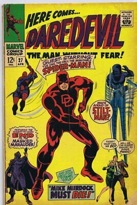

Daredevil

Origins
Daredevil's first appearance was in Daredevil No. 1 released in April 1964. Daredevil's secret identity is Matt Murdock, a blind defense attorney who works at Nelson and Murdock Attorneys at Law, a firm started by him and his friend Foggy Nelson. As a child Matt was in a car accident, which spilled chemicals and blinded him. However due to his blindness, all of his other senses where heightened such as his hearing and smell. As an adult he bears the daredevil persona, keeping his identity a secret and fighting crime, most notably his long time foe/arch-nemesis, The Kingpin, or Wilson Fisk.
Different versions of Daredevil
Different variations include:
- Matt Murdock - Earth 616
- Matt Murdock - Ultimate Universe
- Charlie Cox - Netflix Daredevil show/MCU Daredevil
- Ben Affleck - Daredevil Film - 2003